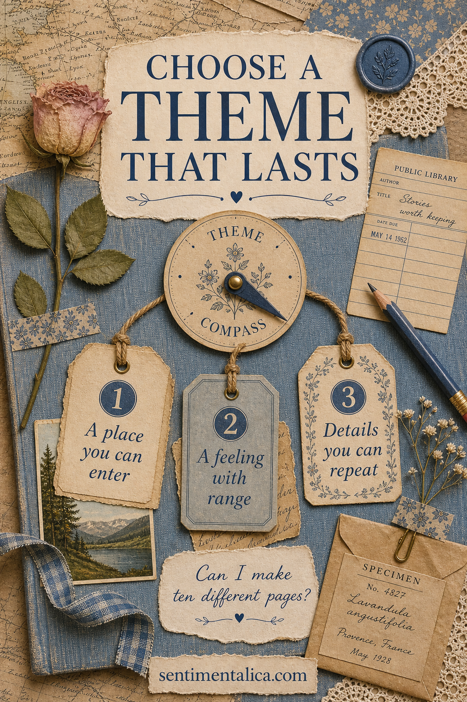
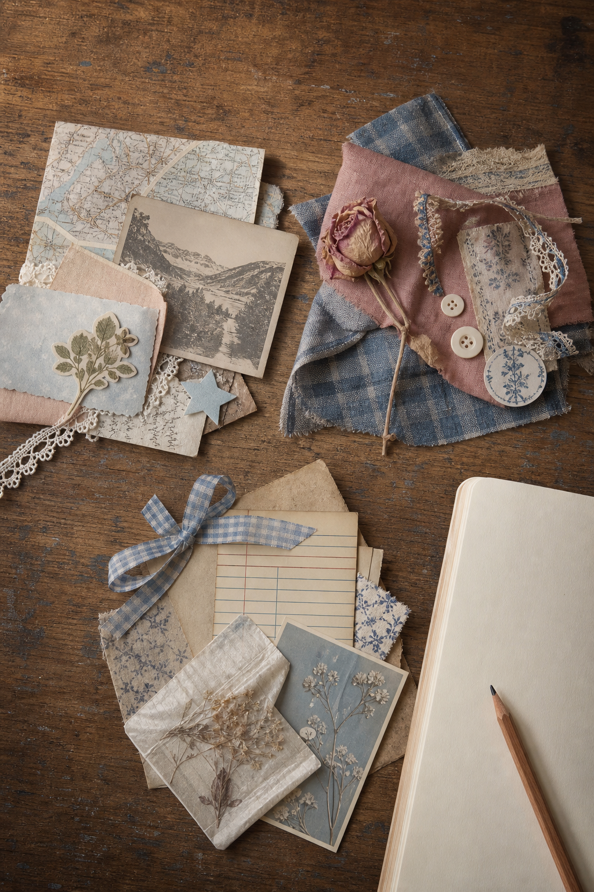
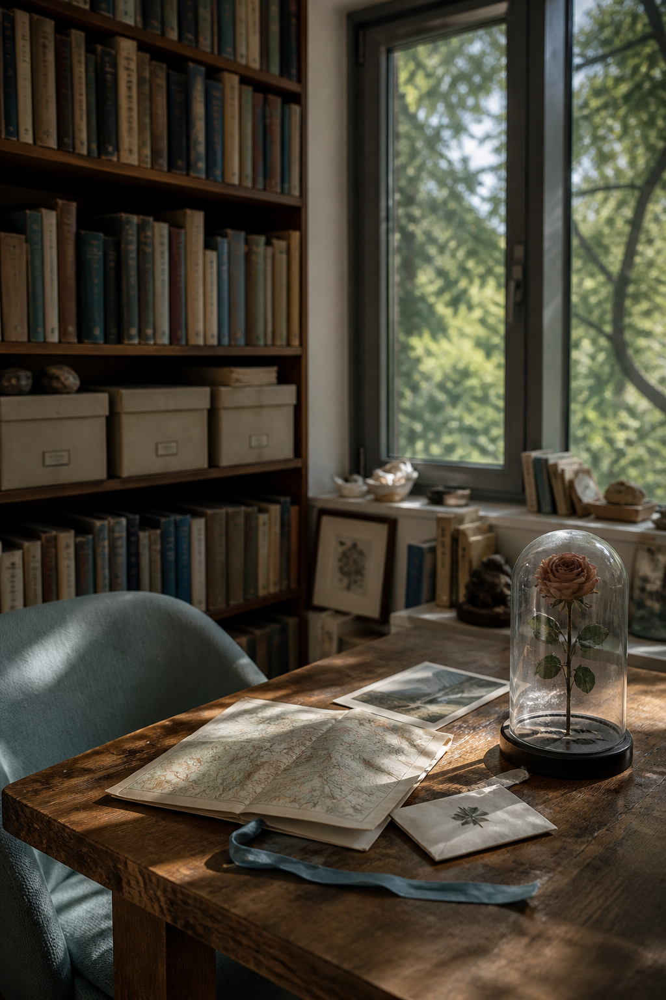

Choosing a junk journal theme can feel exciting until every beautiful idea asks for a different book. Cottage gardens, old libraries, moonlit skies, travel maps, faded roses, and seaside letters all look possible for one afternoon. The difficult part is not finding an aesthetic. It is choosing a world with enough room to keep surprising you.
A lasting theme needs three things: a place you can enter, a feeling with range, and details you can repeat in different ways. If one of these is missing, the theme may produce a lovely first spread and then become difficult to continue.

Choose a place you can enter
“Blue” is a palette, not yet a world. “A quiet coastal reading room” gives you weather, windows, worn books, shells, tea, letters, wood, and distant water. A place does not need to be real. It only needs enough physical detail that you can imagine moving through it.
Ask where your theme lives. Is it a greenhouse after rain, a railway compartment, a grandmother's sewing room, an old city at dusk, or a meadow seen by lantern light? Place gives separate images a shared address.
Choose a feeling with range
A theme built around one narrow mood can become repetitive. “Happy” or “romantic” may make every page ask for the same expression. Look for a feeling that can move. A cottage theme might hold comfort, work, solitude, abundance, weather, nostalgia, and return. Dark academia can hold curiosity, discipline, secrecy, discovery, and rest.
Write three emotional words that belong to the theme but do not mean the same thing. If you can find contrast, you can make pages that feel related without making them identical.
Choose details you can repeat
A repeatable detail is small enough to return without taking over: blue ribbon, library numbers, pressed petals, compass lines, scalloped edges, handwritten dates, or a particular kind of frame. Choose two or three. These echoes create continuity even when the main subject changes.

Use the ten-page test
Before you name the journal or buy anything, list ten genuinely different pages you could make inside the theme. Include at least one quiet page, one story page, one writing-heavy page, one page with a pocket, and one page based on an ordinary day. If every idea depends on the same flower, building, or character, widen the theme by one level.
- Too narrow: red roses.
- More lasting: an old rose garden through the seasons.
- Too narrow: vintage library cards.
- More lasting: the private archive of a curious reader.
- Too narrow: moon pictures.
- More lasting: a nocturnal field journal.
Test the materials before committing
Make three loose clusters instead of a finished spread. Let one cluster represent place, one feeling, and one repeated detail. Use scraps you already own. If the three groups can trade pieces and still feel connected, the theme has flexibility. If they only work in one exact arrangement, the idea may be better for a single page than a whole journal.

Let the theme change as the book fills
A theme is a promise of atmosphere, not a contract. The palette can darken in winter. A garden can acquire letters, recipes, or local maps. A travel journal can become more about waiting rooms than landmarks. Keep the repeated details and allow the emotional range to grow.
The right theme does not give you one perfect image. It gives you a place to return to with different memories. Choose the world, name its range, gather a few recurring clues, and see whether it can hold ten pages before asking it to hold a whole book.
For more theme and composition ideas, browse the Sentimentalica journal archive.